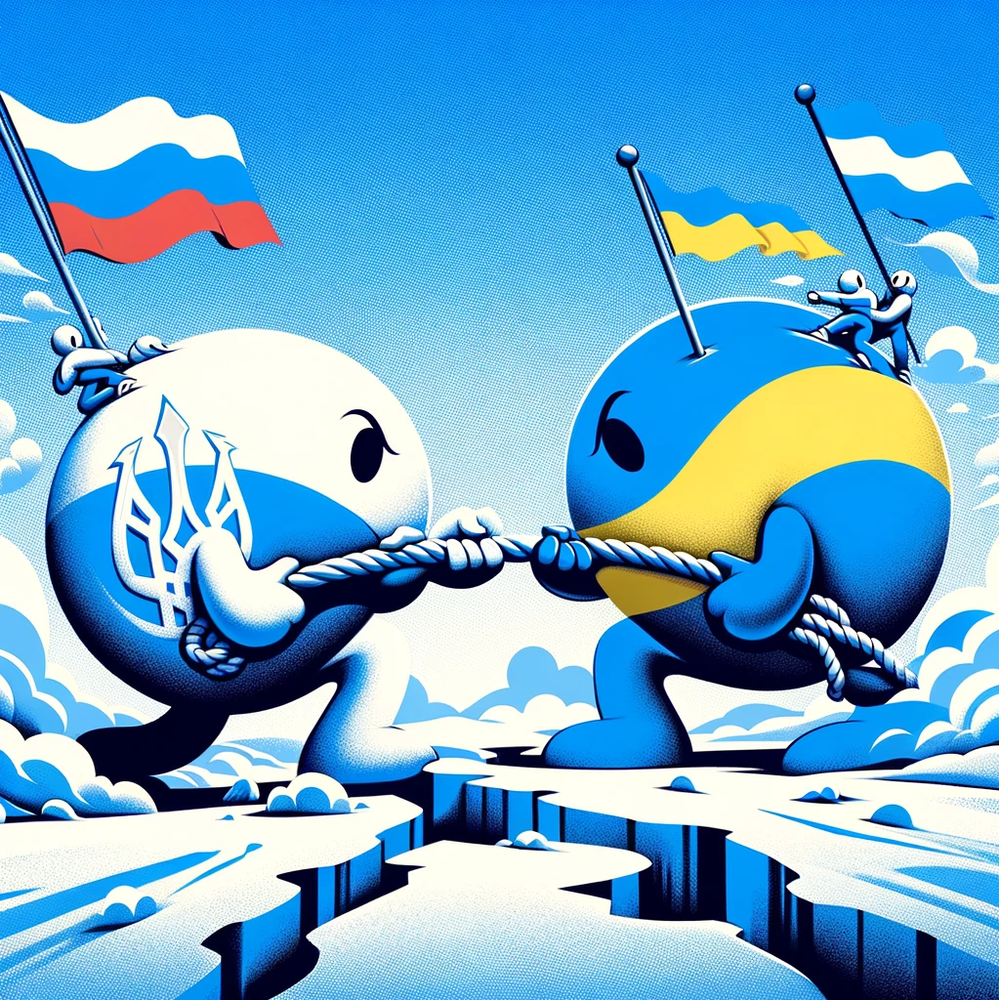
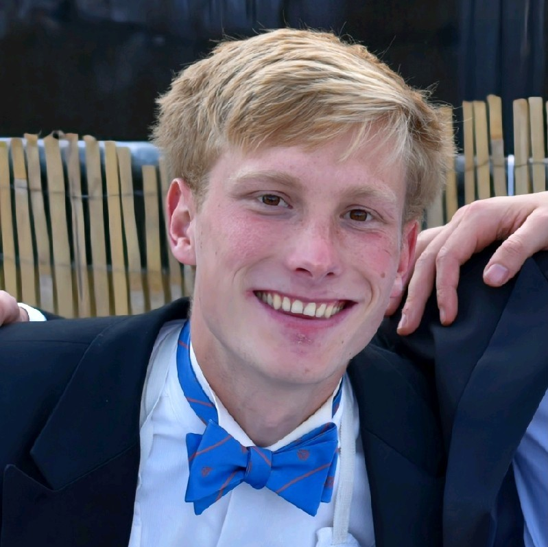

Hoe Rusland twitter gebruikt om desinformatie te versprijden.
Door Bryan Mul
De theorie in het kort
Waar gaat het nou precies over

Korte inleiding
Het conflict tussen Rusland en Oekraïne illustreert de nieuwe rol van sociale media in oorlogsvoering, met Twitter als een belangrijk platform voor informatieverspreiding en propaganda. Russische Twittercampagnes kenmerken zich door geavanceerde digitale strategieën en psychologische operaties, gericht op het beïnvloeden van publieke percepties en attitudes. Deze campagnes, vaak gebruikmakend van authentieke accounts en bots, hebben een aanzienlijke impact op de publieke opinie, door het verspreiden van misinformatie en het zaaien van verdeeldheid.
Meer informatie
Auteur

Bryan Mul
BSc informatiekunde 13217208